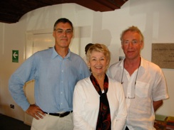
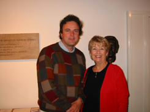

Ruth L. Drucker, soprano
Viennese-born soprano Ruth Drucker has been an active performer and teacher both nationally and internationally. She has been a soloist with symphony orchestras, including the Baltimore Symphony and National Symphony Orchestra at the Kennedy Center. She toured as soloist in Mahler’s Fourth Symphony with the Baltimore Symphony Orchestra, Sergiu Comissiona, conductor. She has also performed leading opera roles with the Harford Opera Theatre, Baltimore Chamber Opera, and Annapolis Opera, and has been soloist in oratorios with major choral groups in Washington and Baltimore. With her husband, pianist Arno Drucker, she has performed joint recitals in the United States, Europe, and Southeast Asia.

![She has also been a guest soloist with various chamber music groups such as Festival Chamber players, Handel Choir, Towson Chamber Players, Contemporary Music Forum and others including performances of Schoenberg’s Pierrot Lunaire and Shostakovitch’s Seven Romances.
Ms. Drucker attended the Eastman School of Music of the University of Rochester and received the degrees Bachelor and Master of Music as well as the Performer’s Certificate in Voice. She appeared as soloist with orchestra under Howard Hanson and Erich Leinsdorf. Further study on scholarship was with Lotte Lehmann at the Music Academy of the West in Santa Barbara, California and at the Akademie für Musik in Vienna and the Mozarteum in Salzburg, Austria on a United States Fulbright grant.
Ms. Drucker has presented Master Classes in the United States, Canada, Indonesia and Europe and was Professor in Residence at Oldenburg University in Germany. She is a vocal consultant at the Britten-Pears Young Artist Programme in Aldeburgh, England, with Phyllis Bryn-Julson, Elly Ameling, Tom Krause, Nelly Miricioiu, Michael Chance, Ann Murray and others and has given Master Classes with Thomas Houser at Marywood University as part of Explorations in Singing. She co-edited a Collection of art songs by women composers, has recorded for Orion and Golden Crest Records. She was a faculty member of the Peabody Conservatory of Music in Baltimore, Maryland for twenty years and is Professor Emeritus at Towson University, Towson, Maryland.](About_Ruth_files/shapeimage_1.png)
About Ruth
Roger Vignoles, Ruth, Richard Stokes
Libby Larsen, Paul Sperry, Ruth

Michael Chance, Ruth

Elly Ameling, Ruth
Malcolm Martineau